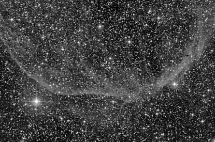

Several of us recently tried to observe CTB 1, a large, filamentary SNR in Cassiopeia, under fairly decent, but not "great" observing conditions. Using Chuck Painter's 20-inch GOTO
Starmaster with an 17mm Nagler+O III filter, the region of brightest arc segment [~23h 59m +62d 14'] was acquired in a particularly rich starfield. Lots of tiny star chains were visible and
tantalizing hints of pseudo-nebulosity were 'detected'. However, using a multiple "blind" test (2 observers did not have prior knowledge of the field) - nothing conclusive could be made
out. It reminded me of the sporting fun of S147, to the point that Dave Riddle called it "
I tried this object several times under less than optimal skies (~6-6.5 mag) without any success. The [OIII] filter "produces" many filaments in the 1° field with the 20-incher. This object requires best conditions and excellent transparency. Ronald [Stoyan] reported a positive detection in Interstellarum 4 (20-incher under 7.0 mag skies in the Alps). - Jens Bohle